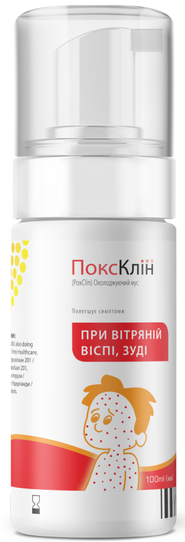

СУЧАСНА ДОПОМОГА ПРИ ВІТРЯНІЙ ВІСПІ, СВЕРБІННІ!
Миттєве полегшення свербіжу
Надає охолоджуючий і заспокійливий ефект
Запобігає утворенню рубців
ПоксКліну довіряють батьки, які турбуються про своїх малюків, і обирають його за якість, зручність у використанні та натуральні складові
ПоксКлін медичний охолоджуючий мус для полегшення симптомів вітряної віспи та свербіння шкіри
З Ви та Ваша дитина відчуєте швидке полегшення
Використання традиційної методики лікування:
- Не усувають свербіж
- Застарілі засоби важко змиваються, залишаються плями
- Ризки утворення рубців
Використання охолоджуючого мусу ПоксКлін:
- Миттєво усувають свербіж
- Не залишає кольорових плям
- Зпобігає утворенню рубців
Переваги
М’який охолоджуючий ефект
Завдяки охолоджуючим властивостям, ПоксКлін охолоджуючий мус заспокоює подразнену шкіру, допомагаючи уникнути розчісування, а отже запобігає утворенню рубців від везикул
Захищає шкіру від шкідливих бактерій
Запатентований активний антибактеріальний 2QR-комплекс натурального рослинного походження, який допомагає захистити шкіру від бактерій, перешкоджає їх подальшу появу
Безпечний у застосуванні
Не містить жодних агресивно-токсичних хімічних речовин і безпечний для зовнішнього застосування на шкірі дітей. Не існує відомих побічних ефектів, пов’язаних з використанням ПоксКлін
Зручний у нанесенні
Застосування ватних паличок, густих лосьонів, мазей при намазуванні пухирців може призвести до їх пошкодження. Охолоджуючий мус при вітряній віспі, свербінні ПоксКлін дуже легкий в нанесенні і не спричиняє тертя з пухирцями при нанесенні на шкіру
Складається з натуральних компонентів
До складу входять пантенол, екстракти алое вера, ромашки і лаванди, які забезпечують охолоджуючий, заспокійливий і пом’якшувальний ефект
Швидко діє
Забезпечує миттєве полегшення відчуття свербіння, прискорює природній процес загоєння і не викликає звикання
Вітряна віспа та лікування
Вітряна віспа, як правило – дитяча інфекційна хвороба з сезонним перебігом (осінь, весна). Згідно з даними Всесвітньої організації охорони здоров’я, щороку в світі хворіє близько 80-90 млн людей, з яких 4,2 млн мають тяжкі ускладнення. В Україні щороку хворіє близько 150 тис. дітей
Розпал захворювання у дітей зазвичай починається після 14-16 днів інкубаційного періоду і супроводжується появою висипу, що свербить, на шкірі всього тіла. Спочатку висип з’являється у вигляді плям, що поступово перетворюються на папули та везикули, кількість яких зазвичай сягає 250-500; через 1-2 дні вони підсихають та утворюють кірочки
Основні принципи лікування вітряної віспи насамперед полягають у належній ізоляції хворої дитини до 6 дня після останніх висипань, дотриманні постільного режиму, споживанні великих об’ємів рідини, частому годуванні малими порціями, щоденній зміні білизни, профілактиці вторинного інфікування та утворення рубців
Ефективний засіб від вітрянки
ПоксКлін – Ефективний засіб від вітрянки для всієї сім'ї
Якщо Ваша дитина скаржиться на підвищену температуру, а на її шкірних та слизових оболонках з'явився папульозний висип, швидше за все ви маєте справу з вітряною віспою. Це захворювання викликане активністю ДНК-геномного вірусу Varicella Zoster, який відноситься до третього типу герпесу. Своєчасне звернення до лікаря та використання спеціальних засобів від вітрянки прискорить одужання та сприятливо вплине на загальний стан дитини.
Впоратися з вітряною віспою допоможе охолоджуючий мус ПоксКлін, який складається з натуральних компонентів і має у своєму складі спеціальний 2QR-комплекс – антибактеріальний блокатор, що захищає та заспокоює шкірний покрив. Цей засіб від вітрянки прискорить процес підсихання кірочок на папулах, а також попередить появу нового висипу.
Перші симптоми та можливі ускладнення захворювання
Хвороба може передаватися як контактним, так і повітряно-крапельним шляхом, тому діти часто заражаються вітрянкою в школах, дитячих садах і лікарнях. Вітряна віспа нагадує ГРЗ. Спочатку у дитини спостерігається підвищена температура, вона стає більш примхливою та млявою. Після цього на тілі починає з'являтися висип у вигляді невеликих цяток червоного кольору, які через кілька годин перетворюються на маленькі пухирці з рідиною всередині. У цей період дитина відчуває сильний свербіж та дискомфорт.
Питання-відповідь
З моменту контакту з вірусом до появи перших симптомів захворювання вітряною віспою проходить близько двох тижнів. Захворювання починається з невеликого підвищення температури і супроводжується симптомами – свербіж, висип у вигляді пухирців, наповнених рідиною, які утворюються по всьому тілу. Протягом 2-3 днів пухирці лопаються, підсихають і на їх місці утворюються скориночки, які ще через кілька днів відпадають. Висип з’являється постійно, хвилями.
З моменту контакту з вірусом до появи перших симптомів захворювання вітряною віспою проходить близько двох тижнів. Захворювання починається з невеликого підвищення температури і супроводжується симптомами – свербіж, висип у вигляді пухирців, наповнених рідиною, які утворюються по всьому тілу. Протягом 2-3 днів пухирці лопаються, підсихають і на їх місці утворюються скориночки, які ще через кілька днів відпадають. Висип з’являється постійно, хвилями.
З моменту контакту з вірусом до появи перших симптомів захворювання вітряною віспою проходить близько двох тижнів. Захворювання починається з невеликого підвищення температури і супроводжується симптомами – свербіж, висип у вигляді пухирців, наповнених рідиною, які утворюються по всьому тілу. Протягом 2-3 днів пухирці лопаються, підсихають і на їх місці утворюються скориночки, які ще через кілька днів відпадають. Висип з’являється постійно, хвилями.
З моменту контакту з вірусом до появи перших симптомів захворювання вітряною віспою проходить близько двох тижнів. Захворювання починається з невеликого підвищення температури і супроводжується симптомами – свербіж, висип у вигляді пухирців, наповнених рідиною, які утворюються по всьому тілу. Протягом 2-3 днів пухирці лопаються, підсихають і на їх місці утворюються скориночки, які ще через кілька днів відпадають. Висип з’являється постійно, хвилями.
З моменту контакту з вірусом до появи перших симптомів захворювання вітряною віспою проходить близько двох тижнів. Захворювання починається з невеликого підвищення температури і супроводжується симптомами – свербіж, висип у вигляді пухирців, наповнених рідиною, які утворюються по всьому тілу. Протягом 2-3 днів пухирці лопаються, підсихають і на їх місці утворюються скориночки, які ще через кілька днів відпадають. Висип з’являється постійно, хвилями.
З моменту контакту з вірусом до появи перших симптомів захворювання вітряною віспою проходить близько двох тижнів. Захворювання починається з невеликого підвищення температури і супроводжується симптомами – свербіж, висип у вигляді пухирців, наповнених рідиною, які утворюються по всьому тілу. Протягом 2-3 днів пухирці лопаються, підсихають і на їх місці утворюються скориночки, які ще через кілька днів відпадають. Висип з’являється постійно, хвилями.
Замовити онлайн в аптеках Вашого міста

Зворотний зв'язок
Поділитися вашими враженнями від застосунку продукту - надішліть повідомлення щодо якості чи небажання явищ компанії - імпортеру.
Написати